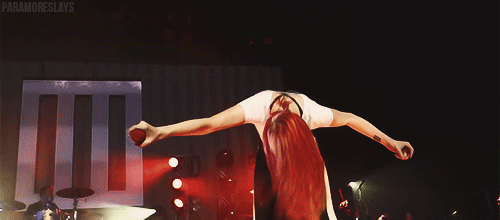
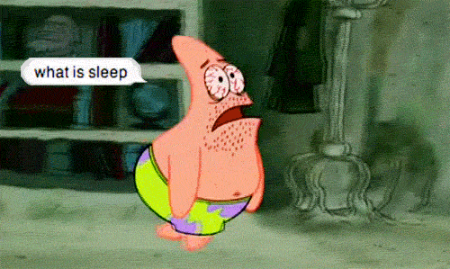
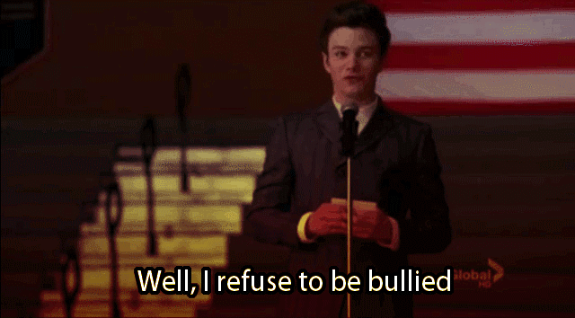
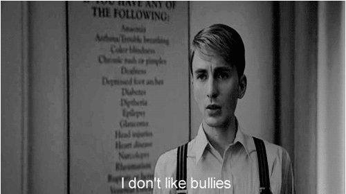
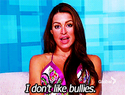

-
SOPHIA
My Family
My Friends
-
GALLERY
FOOD
PLACES
-
GET PERSONAL WITH ME
Hobby
Likes/Dislikes
-
LIKES

PARAMORE
| My favorite band and always will is Paramore. I'm a fan since 2009. What made me love Paramore is the Vocalist's, Hayley William's,
hair. I thought way back then that she was really cool. I was in gradeschool that time and I was in my "emo" phase. Haha!
I am still like them now though, but not like before. I just adore them. |
AMERICAN HORROR STORY
| American Horror Story would be my favorite series, ever! It is already on its 6th season. Like what I said on my hobbies
I am really into creepy/horror stuff. This series has its different story per season BUT according to the writer, it is all connected.
I am still not sure about that though. I would really recommend watching this series because it is unpredictable and interesting. It
might scare you out too. :P |

SLEEPING LATE
| I am definitely a midnight person. I just love sleeping late because I think that you do stuff better when its midnight
It is better to watch a movie at night or search weird stuff on the internet. I know this is weird for me to share haha.
For me it is relaxing and everthing is so quiet. Everything is better at night. :P |
DISLIKES
  
BULLIES
| I extremely hate bullies. I mean I hate a lot of other stuff but this is what is on the top of my list.
I won't share what the other nonsense are. I would like to focus on this. Bullies are disgusting and selfish.
They hurt people or even abuse them. They don't realize that they hurt other people mentally, physically, and emotionally.
It's so sad that they even exist. It gets really tiring because it never stops. People should stand for themselves
and stop this kind of abuse. |